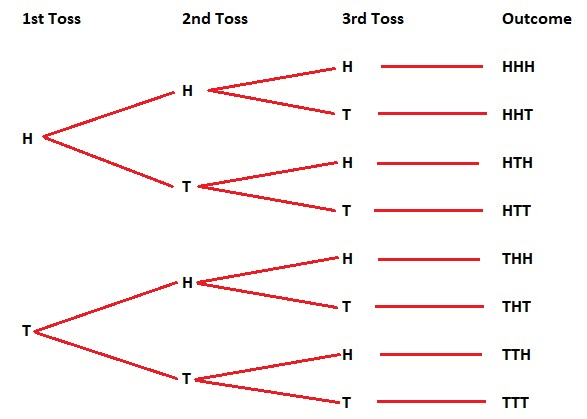

[1] 0.5Definition 6.1
A random experiment or chance experiment is an activity or situation for which an outcome depends on chance. Repeating the activity may result in a different outcome.
Some examples of random experiments include:
Definition 6.2
An outcome is one of the possible results in a random experiment.
Definition 6.3
The sample space \(S\) for a random experiment is the set of all possible outcomes.
Definition 6.4
A subset of the sample space \(S\) consisting of one or more outcomes is an event (\(E\) where \(E \subseteq S\)).
Example 6.1
A coin is flipped three times. List the sample space for this experiment.
The sample space is:
\[\{HHH, HHT, HTH, HTT, THH, THT, TTH, TTT\}\]
Definition 6.5
A tree diagram is a graphical tool used to represent all possible outcomes of a random experiment, with branches depicting the different possible results at each stage of the experiment.

Example 6.2
A bag contains three balls numbered 1, 2, and 3. Two balls are drawn with replacement, and their numbers are recorded in order. List the sample space for this experiment.
The sample space is: YOUR ANSWER
Example 6.3
A bag contains two balls labeled 1 and 2. A coin is flipped, and then one ball is drawn. The outcome is recorded as the coin result followed by the ball number. List the sample space for this experiment.
The sample space is: YOUR ANSWER
If all events in \(S\) are equally likely, then we can compute classical probabilities:
Definition 6.6
The classical probability of an event \(E\) is defined as:
\[P(E) = \frac{|E|}{|S|}\]
Thus, if we can enumerate the outcomes in \(E\) and in \(S\), then we can compute the probability.
Example 6.4
A coin is flipped three times, and the sequence of outcomes is recorded. What is the probability that the first and third flips show the same result?
There are \(2^3\) possible outcomes so \(|S| = 8\). There are four outcomes in the event of interest, \(HHH, HTH, THT, TTT\), so \(|E| = 4\) and the final probability is \(\frac{4}{8} = 0.5\)
Example 6.5
A spinner is divided into four equal sections labeled A, B, C, and D. It is spun twice, and the outcomes are recorded in order. What is the probability that the second spin results in a letter that is alphabetically after the letter from the first spin?
There are \(4^2\) possible outcomes so \(|S| = 16\). Of these outcomes, 6 of them are in the event of interest, \(AB, AC, AD, BC, BD, CD\), so the final probability is \(\frac{6}{16} = 0.375\)
Compute the probability of interest in the following example:
Example 6.6
You roll two fair six-sided dice. What is the probability that the sum of the two dice is equal to 4?
There are \(6^2\) possible outcomes for the dice rolls so \(|S| = 6^2\). The outcomes where the sum of the two dice is 4 are \((1,3), (2,2), \text{ and } (3,1)\) so \(|E| = 3\). The probability is:
\[P(E) = \frac{3}{36} = \frac{1}{12} = 0.0833\]
Compute the probability of interest in the following example:
Example 6.7
You flip a fair coin 10 times, what is the probability that exactly six of them are heads?
Compute the probability of interest in the following example:
Example 6.8
A committee of 5 is to be selected from a group of 6 men and 9 women. If the selection is made randomly, what is the probability that the committee consists of 3 men and 2 women?
Compute the probability of interest in the following example:
Example 6.9
A deck of cards is dealt out. What is the probability that the 14th card dealt is an ace?
Example 6.10
A password consists of 4 letters followed by 3 digits. The letters can be any from the alphabet (26 options), and the digits can be any from 0 to 9 (10 options). What is the probability that the password contains exactly 1 vowel (A, E, I, O, U) in the 4 letter positions and the last digit is even?
Often times, outcomes of a random experiment are not equally likely. In such cases, we might use the frequentist definition of probability:
Definition 6.7
The frequentist probability of an event \(E\) is defined as the limit of its relative frequency in infinitely many trials.
Let \(n\) be the number of trials of the experiment that are performed and let \(k\) be the number of times that the experiment results in event \(E\) occurring. Then the frequentist probability is:
\[P(E) = \lim_{n \rightarrow \infty} \frac{k}{n}\]
Example 6.11
A basketball player shoots 100 free throws and makes 80 of them. What is the probability that the basketball player makes a free throw?
Here \(E\) is the event of making the free throw and we have \(n = 100\) and \(k=80\) so the frequentist estimate of the probability of the event is:
\[\frac{80}{100} = 0.8\]
Example 6.12
John has a three sided-die weighted so that 1, 2, and 3 occur with probabilities 0.5, 0.2, and 0.3 respectively. Sally has another three-sided die, but the probabilities are 0.4, 0.4, and 0.2. They roll their dice. What is the probability that Sally rolls a larger number than John?
[1] 0.3395Example 6.13
You are at the bottom of stairs with 10 steps. You have a weighted coin that is heads with probability 0.7. If you flip a head you take a step up the stairs, otherwise you stay where you are. What is the probability that it takes more than 12 flips to get to the top?
[1] 0.7519Example 6.14
A die is rolled 3 times. What is the probability that the sum of the 3 rolls is greater than 12?
Example 6.15
A deck of cards is shuffled, and a card is drawn 5 times with replacement. What is the probability that exactly 3 of the 5 cards drawn are red cards?